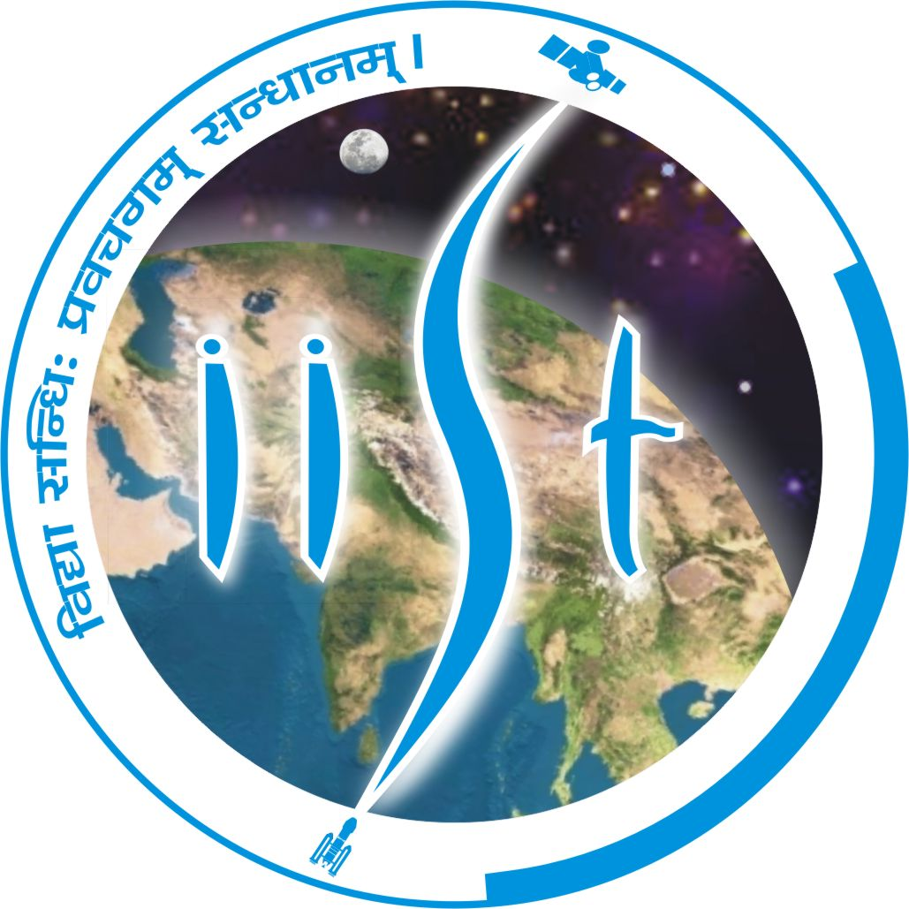

Summer Intern
Indian Institute of Space Science and Technology , Thiruvanathapuram, IndiaProject : Software Defined Delay Tolerant Network (SDDTN)
Analyzed the challenges of Software Defined Network (SDN) in a high delay environment. An Software Defined Delay Tolerant Network (SDDTN) module is deployed onto every switch using OpenFlow protocol which gets activated when there is an absence of main controller connection. The module act as a light-weight controller which generates the flow for the switch and compute the plausible locations to store the packets in the isolated network.
